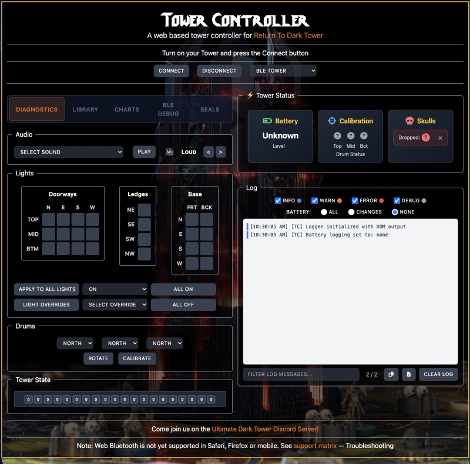
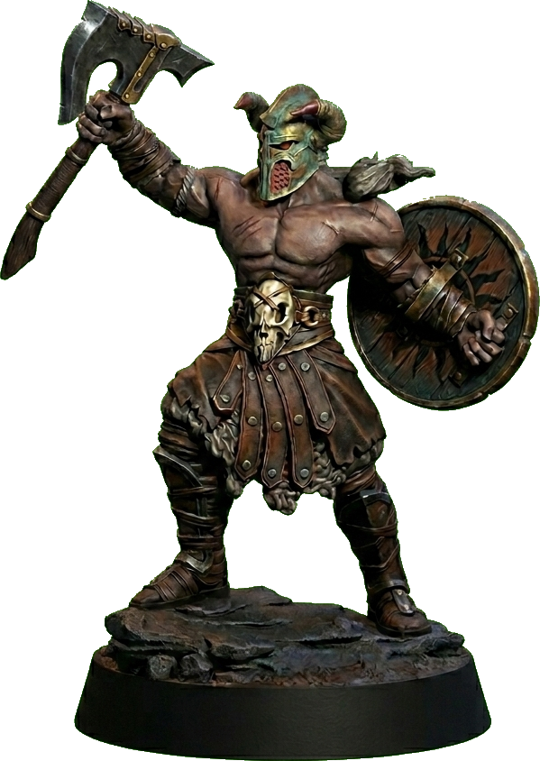

Released
Welcome to the
Ultimate Dark TowerEcosystem
A TypeScript ecosystem for Restoration Games’ Return to Dark Tower — one monorepo of libraries, renderers, and companion apps.
3 libraries
·
9 apps
·
3 published to npm
Explore ▾